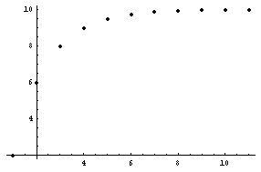

Patterns I found while iterating functions/Chapter 8a
by Maura, 10th grader
[This problem came from a teacher in one of Don's workshops.]
Mr. Cohen gave me the function 5 + x/2 to iterate. I plugged in the number 10 for x and I got the number 10 back out (5+10/2 = 5 + 5 = 10). That was easy. Then I plugged 2 in for x. 5 + 2/2 = 6. Then I put the output number 6, in for x ( 5 + 6/2 = 8). Then I put 8 in for x ( 5 + 8/2 = 9). So I got the infinite sequence 2, 6, 8, 9, 9.5, 9.75, 9.875, 9.9375, 9.96875... which kept getting closer to 10. This putting back the output number in for x repeatedly, is called feedback or iteration. When I used the Mathematica� command Take[N[NestList[f,2,200],300],-1] , which tells the computer to do the iteration or feedback on our function f , 200 times, carry it to 300 digits, and look at only the last number in the sequence, we got:
9.99999999999999999999999999999999999999
9999999999999999999995021587777711086634
28474875697590060752779826502306629351910
67081682409327716932470528441414994291064
34426728355902014300227165222167968750000
00000000000000000000000000000000000000000
00000000000000000000000000000000000000000
0000000000000000 --very, very close to 10.
In Mathematica� Mr. Cohen graphed this iteration using the command:
ListPlot[N[NestList[f,2,10],20],Prolog -> AbsolutePointSize[4]]

And every number I started with to plug in for x, always formed an infinite sequence that got closer and closer to 10. I noticed in the rule 5 + x/2, the numbers 5 and 2 and 5*2=10. When Mr. Cohen gave me the function 6 + x/2, every number I plugged in for x went to 12. I thought 5*2=10 and 6*2=12, I thought the rule was the number times the denominator. But when I used 6 + x/3 I realized it didn't work. Every starting number goes to 9. So I kept working it out more and realized the numbers go to 6*3/2 or 6*3/(3-1). Using a calculator, then Mathematica�, I found that every number I plugged in for x in
6 + x/4 goes to 8 , and 6*4/3 = 6*4/(4-1) = 8
12 + x/6 goes to 14.4, and 12*6/5 = 12*6/(6-1) = 14.4
13 + x/3 goes to 19.5, and 13*3/2 = 13*3/(3-1) = 19.5
So for the function a + x/b all numbers you start with to plug in for x, will form an infinite sequence that goes to (a*b)/(b-1).
Fine work, Maura!
Other links to iterating functions
Costa finds other patterns while iterating functions
10 ways to solve a quadratic equation, chapter 8a and answers to chapter 8a
Kelda
Iterate 6/x
Jamie solves the quadratic equation x2-x-1=0 to get x= Sqrt(x+1), then iterates the right side to get the golden mean!
Mr Matsumoto wrote from Japan after reading Don's book in Japanese, to show how he gets the square root of a number by iteration
Finding the sqrt of a number by iterating and averaging in Chapter 10 #6 and answers
Nanako's Mum solves a linear equation by iteration (map #22)
Jane iterates 2x (video)
Students find the sqrt(sqrt(sqrt(...(x) what happens? See chapter 10 #4, Map upper left corner.
Finding a new number- the Dottie number by iterating cos x
Finding an infinite continued fraction by iteration of 5 - 6/x
Graph the iteration of in , (#11a) starting with n=i, on the Argand or complex plane.
IES applet iterates (a+bi)(a+bi)... using Don's idea above in chapter 11